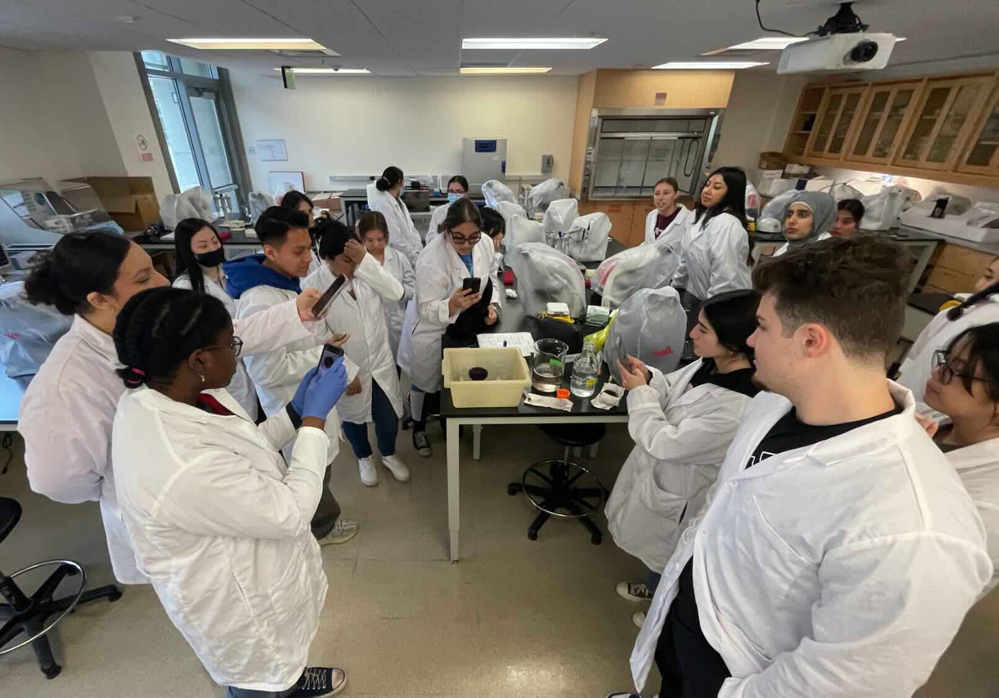

Courses and mentoring
Members of the Materna Lab participate in teaching and mentoring across several courses in the Biology major and the Quantitative and Systems Biology graduate program. These courses introduce students to developmental biology, molecular biology, gene expression analysis, and genome engineering, while also providing opportunities for students to engage directly with experimental research.
Undergraduate courses
- BIO 117: Advanced Molecular Biology (Spring 2027)
- BIO 118: Gene Editing Laboratory
- BIO 150: Embryos, Genes, and Development
- BIO 150L: Developmental Biology Laboratory
- BIO 195: Undergraduate Research
Graduate courses
- QSB 278: Gene Expression Analysis
- QSB 298: Developmental Biology and Neurobiology Journal Club
Research-based learning
Genome engineering in the classroom
Research training is part of our core mission. While we welcome undergraduate researchers into the lab, space is necessarily limited. To make research more accessible, we developed the Gene Editing Laboratory (BIO 118) together with Prof. Stephanie Woo. This course provides students with an authentic undergraduate research experience centered on genome engineering in zebrafish. Students design experiments, generate targeted mutations, and analyze resulting phenotypes using contemporary molecular and genetic approaches. Several students who participated in this course went on to become co-authors on peer-reviewed publications, including a study describing tissue-specific endogenous protein labeling using split fluorescent proteins.
